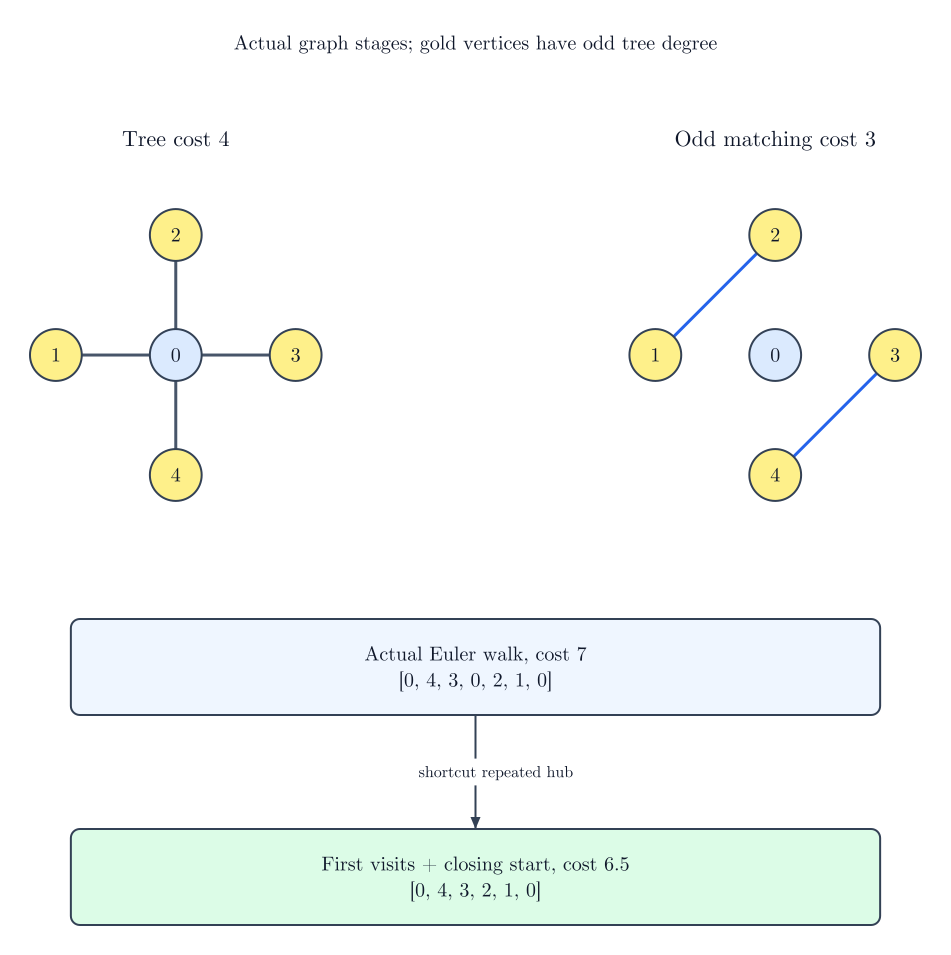
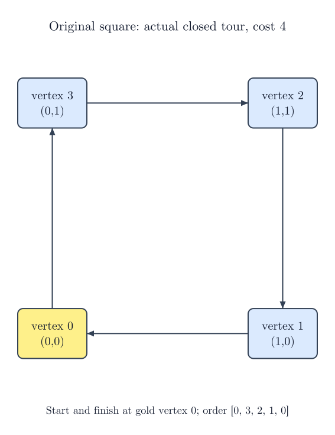
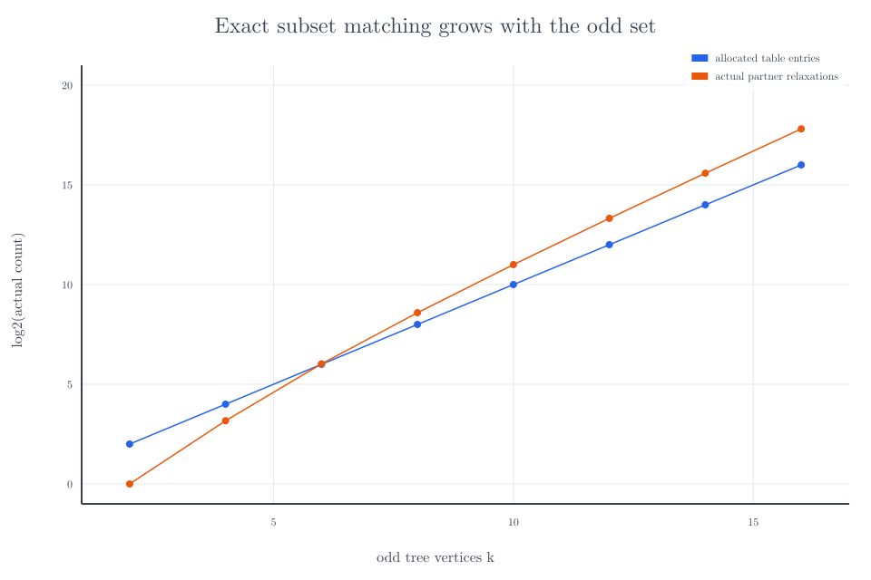

Christofides' TSP Construction: Parity, Euler Walks and Shortcuts
Abstract
A delivery route must visit every location and return to its start, while keeping its total distance small. Searching every order soon becomes impractical. For symmetric metric costs, Christofides' construction combines a minimum spanning tree, a minimum perfect matching of its odd-degree vertices, and Euler-walk shortcutting to obtain a tour within 3/2 of the optimum in exact arithmetic. We inspect the actual native stages on five vertices, retain the original square, verify a controlled family, and expose both nonmetric failures and the exponential matching limit of this bounded implementation.
Five vertices: fix parity, then remove repeated visits
Vertex 0 is a hub and vertices 1–4 are interchangeable leaves. Every hub/leaf cost is 1; every distinct leaf/leaf cost is 1.5. These complete costs obey the triangle inequality: a leaf pair costs 1.5≤1+1 through the hub. The drawing is a schematic of these costs, not a planar Euclidean embedding.
The minimum spanning tree contains the four hub spokes and costs 4. Its hub has even degree four and all four leaves have odd degree one. Pairing leaves (1,2) and (3,4) costs 3 and makes every multigraph degree even. The actual Euler walk repeats the hub; keeping only each vertex's first visit and then closing the cycle shortens its cost from 7 to 6.5. All stage values below come from one execution of the canonical kernel.
#include <dm/dm.hpp>
int main() {
std::filesystem::create_directories("build");
const auto d=dm::algorithms::hub_tsp_distances(4);
const auto t=dm::algorithms::christofides_trace(d);
if(!dm::algorithms::is_tsp_metric(d) || t.result.cost!=6.5 || t.euler_cost!=7)return 1;
std::print("| stage | actual edges or order | cost |\n| :--- | :--- | ---: |\n");
for(const auto& [u,v,w]:t.tree)std::print("| tree edge | {}--{} | {} |\n",u,v,w);
for(const auto& [u,v,w]:t.matching)std::print("| matching edge | {}--{} | {} |\n",u,v,w);
std::print("| Euler circuit | {} | {} |\n| first visits, then close | {} | {} |\n",t.euler_vertices,t.euler_cost,t.result.tour,t.result.cost);
std::print("\nOdd tree vertices: {}. Retained Euler positions: {}. Edge identities consumed: {}.\n",t.odd_vertices,t.kept_positions,t.work.euler_edge_visits);
dm::graphics::Diagram diagram(60,1100);
const std::array<dm::graphics::DiagramPoint,5> points{{{0,0},{-2,0},{0,2},{2,0},{0,-2}}};
dm::graphics::DiagramStroke stroke;stroke.color={71,85,105};stroke.width=3;
for(const auto& [u,v,w]:t.tree)diagram.path({points[u],points[v]},stroke);
stroke.color={37,99,235};
for(const auto& [u,v,w]:t.matching)diagram.path({{points[u].x+10,points[u].y},{points[v].x+10,points[v].y}},stroke);
dm::graphics::DiagramNodeStyle node;node.circle=true;node.width=0.85;node.height=0.85;node.font_size=20;
for(int panel=0;panel<2;++panel)for(std::size_t v=0;v<points.size();++v) {
node.fill=std::ranges::find(t.odd_vertices,v)!=t.odd_vertices.end()?dm::graphics::RGB{254,240,138}:dm::graphics::RGB{219,234,254};
diagram.node(std::format("p{}v{}",panel,v),{points[v].x+10*panel,points[v].y},std::format("{}",v),node);
}
diagram.text({0,3.6},std::format("Tree cost {}",t.tree_cost),22)
.text({10,3.6},std::format("Odd matching cost {}",t.matching_cost),22)
.text({5,5.2},"Actual graph stages; gold vertices have odd tree degree",20);
node.circle=false;node.width=13.5;node.height=1.6;node.fill={239,246,255};
diagram.node("euler",{5,-5.2},std::format("Actual Euler walk, cost {}\n{}",t.euler_cost,t.euler_vertices),node);
node.fill={220,252,231};
diagram.node("tour",{5,-8.7},std::format("First visits + closing start, cost {}\n{}",t.result.cost,t.result.tour),node)
.edge("euler","tour","shortcut repeated hub")
.save_svg("build/christofides_method.svg");
}| stage | actual edges or order | cost |
|---|---|---|
| tree edge | 0--1 | 1 |
| tree edge | 0--2 | 1 |
| tree edge | 0--3 | 1 |
| tree edge | 0--4 | 1 |
| matching edge | 1--2 | 1.5 |
| matching edge | 3--4 | 1.5 |
| Euler circuit | [0, 4, 3, 0, 2, 1, 0] | 7 |
| first visits, then close | [0, 4, 3, 2, 1, 0] | 6.5 |
Odd tree vertices: [1, 2, 3, 4]. Retained Euler positions: [0, 1, 2, 4, 5]. Edge identities consumed: 6.

Why the metric construction has a 3/2 bound
Let OPT be the shortest closed Hamiltonian tour cost. Deleting one edge from an optimal cycle gives a spanning tree, so the minimum spanning tree T satisfies w(T)≤OPT. The number of odd-degree vertices O in any undirected graph is even, because the sum of its degrees is twice its edge count.
Shortcut an optimal cycle to visit only O, using the triangle inequality. Its cost does not increase. Because O is even, alternate edges of that cycle form two perfect matchings on O. The cheaper one costs at most half the cycle. A minimum perfect matching M therefore satisfies w(M)≤OPT/2. Adding M to T makes every degree even and preserves connectivity. An Euler circuit traverses every edge copy of this multigraph once, with cost w(T)+w(M). Finally, replacing paths through repeated vertices with direct edges cannot increase cost in a metric. Thus
This proof needs symmetric nonnegative costs, zero diagonal and the triangle inequality. Off-diagonal zero costs are harmless: pseudometrics are supported, and if OPT=0 the bound is an inequality rather than a defined cost ratio. A successful call alone does not establish these assumptions. The separate is_tsp_metric() checker tests them, with an optional absolute comparison tolerance. Passing with tolerance does not certify an exact metric or the exact same bound. Floating-point sums and near-tied matchings also remain numerical approximations to the exact-arithmetic proof.
The original square and a Euclidean control
The original distance matrix rounds both diagonals of a unit square to 1.414. It is still a metric, and its minimum tour costs 4. We preserve that input, then compare it with native Euclidean distances computed from the four planar coordinates. The tiny diagonal difference does not affect this tour's cost. The arrows show the actual chosen closed order. Tied trees now use an explicit (weight,u,v) order; a previously unspecified tied tour may change without changing the API or the optimum cost in this control.
#include <dm/dm.hpp>
int main() {
std::filesystem::create_directories("build");
const std::vector<std::pair<double,double>> points{{0,0},{1,0},{1,1},{0,1}};
const std::vector<std::vector<double>> rounded{{0,1,1.414,1},{1,0,1,1.414},{1.414,1,0,1},{1,1.414,1,0}};
const auto euclidean=dm::algorithms::euclidean_tsp_distances(points);
std::print("| square costs | diagonal | metric check | closed tour | cost |\n| :--- | ---: | :--- | :--- | ---: |\n");
for(int variant=0;variant<2;++variant) {
const auto& d=variant?euclidean:rounded;const auto t=dm::algorithms::christofides_trace(d);
if(t.result.cost!=4)return 1;
std::print("| {} | {:.9f} | {} | {} | {} |\n",variant?"native Euclidean":"original rounded",d[0][2],dm::algorithms::is_tsp_metric(d,1e-12),t.result.tour,t.result.cost);
}
const auto t=dm::algorithms::christofides_trace(rounded);
dm::graphics::Diagram diagram(65,900);
dm::graphics::DiagramNodeStyle node;node.width=1.8;node.height=1.3;node.font_size=20;
for(std::size_t v=0;v<points.size();++v) {
node.fill=v?dm::graphics::RGB{219,234,254}:dm::graphics::RGB{254,240,138};
diagram.node(std::format("v{}",v),{6*points[v].first,6*points[v].second},std::format("vertex {}\n({},{})",v,points[v].first,points[v].second),node);
}
for(std::size_t i=1;i<t.result.tour.size();++i)diagram.edge(std::format("v{}",t.result.tour[i-1]),std::format("v{}",t.result.tour[i]));
diagram.text({3,8},std::format("Original square: actual closed tour, cost {}",t.result.cost),22)
.text({3,-2},std::format("Start and finish at gold vertex {}; order {}",t.result.tour.front(),t.result.tour),18)
.save_svg("build/christofides_square.svg");
const auto parallel=dm::algorithms::christofides_trace({{0,2},{2,0}});
if(parallel.euler_edge_ids.size()!=2 || parallel.euler_edge_ids[0]==parallel.euler_edge_ids[1])return 1;
std::print("\nTwo-vertex control: tree and matching have equal endpoints but distinct edge identities {}; closed cost {}.\n",parallel.euler_edge_ids,parallel.result.cost);
}| square costs | diagonal | metric check | closed tour | cost |
|---|---|---|---|---|
| original rounded | 1.414000000 | true | [0, 3, 2, 1, 0] | 4 |
| native Euclidean | 1.414213562 | true | [0, 3, 2, 1, 0] | 4 |
Two-vertex control: tree and matching have equal endpoints but distinct edge identities [1, 0]; closed cost 4.

A multigraph matters even in the two-vertex control: its single tree edge and matching edge share endpoints, but both must be traversed. The trace's Euler edge ids refer to tree edges followed by matching edges; they never collapse parallel copies into one undirected endpoint pair.
Exact matching here means exponential subset search
For a subset S of odd vertices, take its smallest vertex i and try each partner j in S. The recurrence is
Only even masks have solutions. The implementation evaluates each nonempty even mask once, keeps the first smallest partner on a tie, and reconstructs its selected pairs. For k≥2 even odd vertices, the actual table has 2k entries, 2(k−1)−1 nonempty even masks, and
partner relaxations. The identity follows by subtracting the count of nonempty even subsets from the sum of their cardinalities, k·2^(k−2). Odd masks occupy storage but have no relaxations. The trace records these actual counts; the plot transforms them with log2 for a readable vertical scale. It does not measure runtime.
For a hub with k even leaves, spoke cost 1 and rim cost 1.5, the MST is the star and exactly those k leaves are odd. Any Hamiltonian cycle has two spokes and k−1 leaf edges, so OPT=2+1.5(k−1). This family verifies the counting formula and a known optimum without implementing a second solver in the report. All these tours attain the optimum; the family does not test tightness of the worst-case 3/2 bound.
#include <dm/dm.hpp>
int main() {
std::filesystem::create_directories("build");
std::vector<double> k_values,table_log,partner_log;
std::print("| vertices | odd k | table entries | even masks | partner relaxations | predicted partners | tour | known OPT |\n| ---: | ---: | ---: | ---: | ---: | ---: | ---: | ---: |\n");
for(std::size_t k=2;k<=16;k+=2) {
const auto t=dm::algorithms::christofides_trace(dm::algorithms::hub_tsp_distances(k));
const auto predicted=(k-2)*(std::size_t{1}<<(k-2))+1;const double optimum=2+1.5*(k-1);
if(t.odd_vertices.size()!=k || t.work.matching_candidates!=predicted || t.result.cost!=optimum)return 1;
std::print("| {} | {} | {} | {} | {} | {} | {} | {} |\n",k+1,k,t.work.matching_table_entries,t.work.matching_masks,t.work.matching_candidates,predicted,t.result.cost,optimum);
k_values.push_back(k);table_log.push_back(std::log2(t.work.matching_table_entries));partner_log.push_back(std::log2(t.work.matching_candidates));
}
auto plot=dm::graphics::RPlot::create();
plot.line(k_values,table_log,"table",{37,99,235},1.5).points(k_values,table_log,"table",{37,99,235},4)
.line(k_values,partner_log,"partners",{234,88,12},1.5).points(k_values,partner_log,"partners",{234,88,12},4)
.legend({"allocated table entries","actual partner relaxations"},{{37,99,235},{234,88,12}})
.title("Exact subset matching grows with the odd set")
.x_label("odd tree vertices k").y_label("log2(actual count)").x_limits(1,17).y_limits(-1,21)
.save_svg("build/christofides_matching_work.svg");
std::vector<std::pair<double,double>> line;for(int i=0;i<64;++i)line.emplace_back(i,0);
const auto long_line=dm::algorithms::christofides_trace(dm::algorithms::euclidean_tsp_distances(line));
if(long_line.result.cost!=126 || long_line.odd_vertices.size()!=2)return 1;
std::print("\n64-vertex line: {} odd vertices, {} matching table entries, cost {} = twice the endpoint distance.\n",long_line.odd_vertices.size(),long_line.work.matching_table_entries,long_line.result.cost);
constexpr std::size_t largest_table=std::size_t{1}<<22;
std::print("At the supported k=22 limit: {} table slots; long-double cost plus byte-choice payload on this platform is {} bytes (excluding other storage).\n",largest_table,largest_table*(sizeof(long double)+sizeof(std::uint8_t)));
}| vertices | odd k | table entries | even masks | partner relaxations | predicted partners | tour | known OPT |
|---|---|---|---|---|---|---|---|
| 3 | 2 | 4 | 1 | 1 | 1 | 3.5 | 3.5 |
| 5 | 4 | 16 | 7 | 9 | 9 | 6.5 | 6.5 |
| 7 | 6 | 64 | 31 | 65 | 65 | 9.5 | 9.5 |
| 9 | 8 | 256 | 127 | 385 | 385 | 12.5 | 12.5 |
| 11 | 10 | 1024 | 511 | 2049 | 2049 | 15.5 | 15.5 |
| 13 | 12 | 4096 | 2047 | 10241 | 10241 | 18.5 | 18.5 |
| 15 | 14 | 16384 | 8191 | 49153 | 49153 | 21.5 | 21.5 |
| 17 | 16 | 65536 | 32767 | 229377 | 229377 | 24.5 | 24.5 |
64-vertex line: 2 odd vertices, 4 matching table entries, cost 126 = twice the endpoint distance. At the supported k=22 limit: 4194304 table slots; long-double cost plus byte-choice payload on this platform is 71303168 bytes (excluding other storage).

With n total vertices and k odd tree vertices, this implementation materialises and sorts the complete upper-triangle edge list, then performs subset matching. Its work is O(n² log(n+1)+k·2k), and auxiliary storage is O(n²+2k). The original Christofides algorithm uses polynomial minimum-weight matching; this library's bounded subset substitute must not inherit its O(n³) claim. The default limit is 22 odd vertices, not 22 total vertices. Increasing total vertices can still exhaust the complete graph's quadratic storage.
A successful return does not establish a metric bound
Consider a symmetric four-vertex matrix whose off-diagonal costs are all 1 except d(1,3)=d(3,1)=100. It violates the triangle inequality through vertex 0. The tour 0,1,2,3,0 costs 4, and no four-edge tour can cost less because every off-diagonal edge costs at least 1. Yet the deterministic construction's shortcut can replace the cheap path 1,0,3 by the direct edge of cost 100. The resulting tour costs 103. Its ratio to the proven optimum is 25.75, which is not constrained by the metric theorem.
#include <dm/dm.hpp>
int main() {
const std::vector<std::vector<double>> nonmetric{{0,1,1,1},{1,0,1,100},{1,1,0,1},{1,100,1,0}};
const auto t=dm::algorithms::christofides_trace(nonmetric);
if(dm::algorithms::is_tsp_metric(nonmetric) || t.result.cost!=103)return 1;
std::print("Symmetric nonmetric input: metric check {}, Euler order {} costs {}, shortcut order {} costs {}; ratio to OPT=4 is {}.\n",
dm::algorithms::is_tsp_metric(nonmetric),t.euler_vertices,t.euler_cost,t.result.tour,t.result.cost,t.result.cost/4);
const auto asymmetric=dm::algorithms::christofides_trace({{0,1,10},{9,0,2},{3,4,0}});
std::print("Asymmetric input remains accepted: upper-triangle tree + matching cost {}, actual directed Euler cost {}, final cost {}.\n",
asymmetric.tree_cost+asymmetric.matching_cost,asymmetric.euler_cost,asymmetric.result.cost);
const auto largest=std::numeric_limits<double>::max();bool overflow=false;
try{(void)dm::algorithms::christofides_tsp({{0,largest},{largest,0}});}catch(const std::overflow_error&){overflow=true;}
if(!overflow)return 1;std::print("Finite entries but an unrepresentable final total reject with overflow_error: {}.\n",overflow);
}Symmetric nonmetric input: metric check false, Euler order [0, 1, 0, 3, 2, 0] costs 5, shortcut order [0, 1, 3, 2, 0] costs 103; ratio to OPT=4 is 25.75. Asymmetric input remains accepted: upper-triangle tree + matching cost 13, actual directed Euler cost 23, final cost 23. Finite entries but an unrepresentable final total reject with overflow_error: true.
The legacy API continues to accept any finite nonnegative square matrix. For asymmetric inputs, the tree and matching use upper-triangle weights while the final route cost uses directed entries. Their sum need not equal the Euler walk cost. No directed-TSP or nonmetric approximation guarantee is claimed. The new kernel accumulates matching and route costs in long double and checks the final conversion to double. This also prevents a previously overflowing matching table sum from leaving an invalid partner index for reconstruction. Long double remains finite and platform-dependent; this is not arbitrary precision or exact-real optimisation.
Caps, validation and evidence
ChristofidesOptions retains the default maximum of 22 odd vertices and allows a lower hard cap, including zero. Its positive max_matching_states limits allocated 2^k slots before that allocation; zero disables this table cap. The tree must already exist to determine k. These controls do not cap matrix, complete-edge-list or tree storage, nor do they return partial results on failure.
#include <dm/dm.hpp>
int main() {
const auto d=dm::algorithms::hub_tsp_distances(4);
dm::algorithms::ChristofidesOptions cap;cap.max_odd_vertices=4;cap.max_matching_states=16;
const auto exact=dm::algorithms::christofides_tsp_with_options(d,0,cap);
bool table_cap=false;cap.max_matching_states=15;
try{(void)dm::algorithms::christofides_trace(d,0,cap);}catch(const std::length_error&){table_cap=true;}
bool odd_cap=false;cap.max_matching_states=0;cap.max_odd_vertices=3;
try{(void)dm::algorithms::christofides_trace(d,0,cap);}catch(const std::invalid_argument&){odd_cap=true;}
bool invalid=false;
try{(void)dm::algorithms::is_tsp_metric({{1,0},{0,std::numeric_limits<double>::quiet_NaN()}});}catch(const std::invalid_argument&){invalid=true;}
if(exact.cost!=6.5 || !table_cap || !odd_cap || !invalid)return 1;
std::print("Exact 16-slot cap returns cost {}. Cap 15 rejects: {}. Odd cap three rejects: {}.\n",exact.cost,table_cap,odd_cap);
std::print("Full validation finds trailing NaN before an earlier diagonal failure: {}.\n",invalid);
const auto empty=dm::algorithms::christofides_tsp({},999);const auto singleton=dm::algorithms::christofides_tsp({{0}});
std::print("Empty input: tour {}, cost {}. Singleton: tour {}, cost {}.\n",empty.tour,empty.cost,singleton.tour,singleton.cost);
}Exact 16-slot cap returns cost 6.5. Cap 15 rejects: true. Odd cap three rejects: true. Full validation finds trailing NaN before an earlier diagonal failure: true. Empty input: tour [], cost 0. Singleton: tour [0, 0], cost 0.
Every matrix row and entry validates before construction or an early metric comparison. Empty input returns no vertices and zero cost, ignoring the start; a singleton returns its closed two-entry order. Calls share no mutable state, borrow inputs without mutation, and return owned records. Euler traversal and union-find compression are iterative. Stage records add linear storage and retain no DP table after return.
Development tests exhaust all 729 symmetric four-vertex matrices with edge costs 0, 1 or 2 and independently check the MST with Prim's method, the odd matching with recursive pairing, Euler edge identities, first-visit positions and costs. For 120 generated integer shortest-path metrics, exhaustive Hamiltonian orders verify the bound and each component inequality. Another 1,000 planar inputs exercise generated distances, repeated points, every stage and numerical ties. Parallel copies, every square start, zero costs, whole-matrix invalid input, exact/one-below caps, owned copies, wide matching alternatives with fitting final results, final overflow and a 1,200-vertex line are covered. All fifteen new cases pass AddressSanitizer and UBSan, alongside existing tour regressions. No observational dataset is needed for these controlled graph identities.
What the construction establishes
Parity correction turns a connected tree into an Eulerian multigraph. In a metric, first-visit shortcutting preserves feasibility without increasing cost, and the tree/matching bounds give the 3/2 theorem. The native trace now makes each of those stages inspectable. Nonmetric examples and exponential subset matching delimit what this particular implementation promises.
Reference
- Nicos Christofides (1976), Worst-Case Analysis of a New Heuristic for the Travelling Salesman Problem, Management Sciences Research Report 388, Carnegie-Mellon University. https://www.ibr.cs.tu-bs.de/courses/ss21/na/uebungen/ADA025602.pdf The library follows its tree/matching/Euler/shortcut construction, substituting bounded subset dynamic programming for polynomial minimum-weight matching.